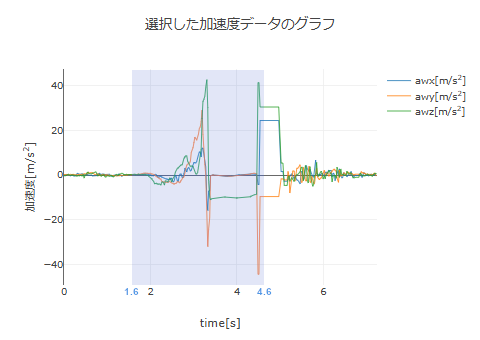
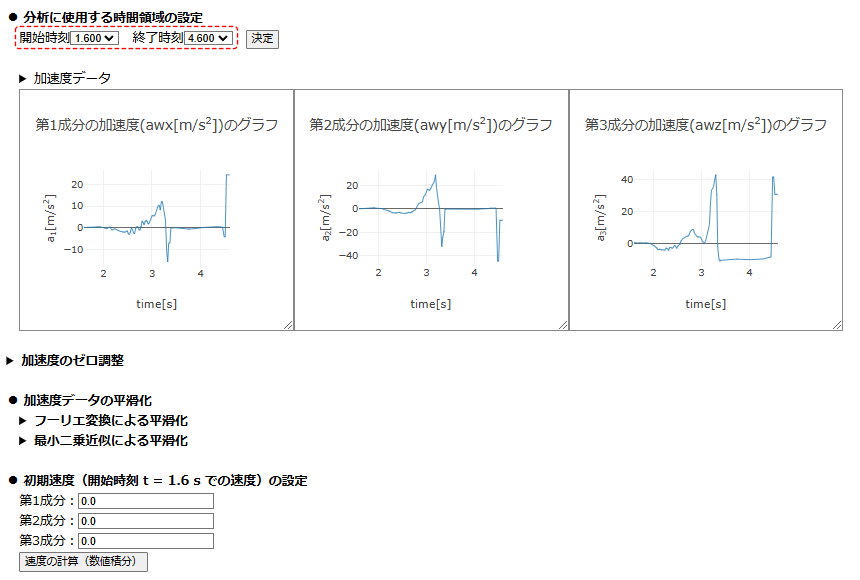

【操作方法】
■ 分析に使用する時間領域の設定
時刻列と加速度列を選択後，選択した加速度データのグラフを確認し，分析に使用する時間領域を設定する．
下図の加速度のグラフにおいて，時刻1.6秒から4.6秒の間の加速度データを分析に使用する場合，時間領域の設定で開始時刻に1.6を，終了時刻に4.6を選択する．

開始時刻と終了時刻を選択後，右の「決定」ボタンを押すと，設定した時間領域の加速度のグラフが成分ごとに改めて表示される．加速度グラフの上にある「▶ 加速度データ」をクリックすると，設定した時間領域の加速度データテーブルが現れる（もう一度クリックすると閉じる）．

必要に応じて，加速度のゼロ調整（加速度データ全体をシフトしてゼロとなる位置を調整する）や加速度データの平滑化（フーリエ変換による平滑化，最小二乗近似による平滑化）を行う．数値積分により加速度データから速度データを求めるには，初期速度を成分ごとに設定し「速度の計算（数値積分）」を押す．